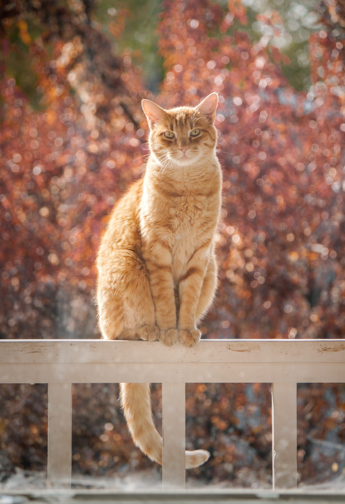

貓咪1
貓（cat）通常指家貓（學名：Felis catus），是一種家養小型食肉哺乳動物，屬中型貓科動物。

貓咪2
家貓的學名「Felis catus」是卡爾·林奈在其1758年著作《自然系統》中所命名的。

貓咪3
古希臘文Kattos及拉丁文Catus是現代大部分西方語言中「貓」字的詞源，如英文的cat、法語的chat、義大利文的gatto等。

貓咪4
貓的演化可以追溯至新生代第三紀古新世演化出的肉齒類，肉齒類動物為所有現代食肉目動物的共同演化祖先。

貓咪5
一般以家貓從古到今都保存著的畏寒特點，推測其貓的祖先產於溫暖地帶。故非洲野貓及亞洲野貓有極大可能為家貓直接近親。

貓咪6
西周時代《詩經·大雅·韓奕》寫到：「有熊有羆，有貓有虎。」但詩句中將貓與熊、棕熊等猛獸並列在一起，依文意推測不是指家貓。

貓咪7
《爾雅．釋獸》寫道：「虎竊毛謂之貓。」竊毛的意思是淺毛，同為貓科，貓和虎本就有高相似度。文獻提到的「貓」，應是未馴化前的野貓。

貓咪8
貓是一種胎生動物。在發情期，公貓到處撒尿，而母貓在半夜狂吼亂叫，民間俗稱此為「鬧貓」或「貓叫春」。